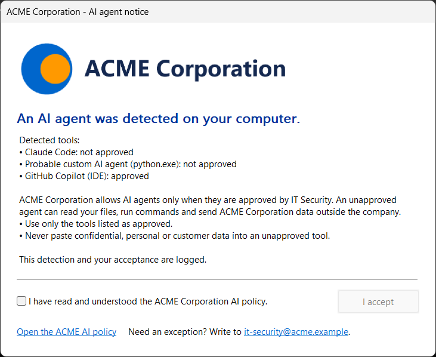

AI agents now run on the endpoint
A security team can approve GitHub Copilot, publish an AI policy and filter a few websites, and still not know what runs on its laptops. Many agents run locally: Claude Code or Codex in a terminal, Cursor or Windsurf as the editor, Ollama serving a model on the machine, and scripts that nobody declared. An agent can be twenty lines of Python that call an LLM API and pass the answer to a shell.
Agent Detector is my answer to that blind spot, for Windows fleets managed with Microsoft Intune. It is a small Go program, detectoragent.exe, that Intune installs on every PC with a scheduled task. The task scans the PC two minutes after each logon, then every hour. A scan takes well under two seconds and makes no network connection [1].
One design choice shapes the rest: the detector only detects. It never blocks, closes or uninstalls anything. What it does instead is ask every user who has an AI tool to read and accept the company's AI policy, and write every detection and every acceptance to the Windows Event Log.
Three kinds of findings
A scan collects, in parallel and without any network request, a snapshot of the running processes, the TCP table and the Windows DNS cache, the execution traces Windows keeps, and an inventory of the registry and of known folders [2]. From that, it reports three kinds of findings.
Known tools
39 tools in an embedded catalog, from command-line agents to local model runtimes.
Home-made agents
Any process connected to an LLM service, and above all one that also runs shells or interpreters.
Recent use
BAM and Prefetch traces and agent history folders, so a tool used between two scans still shows up.
| Category | Examples from the catalog |
|---|---|
| CLI agents | Claude Code, OpenAI Codex, Gemini CLI, GitHub Copilot CLI, OpenCode, Aider, Goose, Open Interpreter |
| Desktop assistants | Claude Desktop (including Cowork), ChatGPT Desktop |
| AI editors | Cursor, Windsurf, Kiro, Trae |
| Editor extensions | GitHub Copilot, VS Code agent mode with MCP servers, Cline, Roo Code, Kilo Code, Continue, Amazon Q, Gemini Code Assist, Augment, Tabnine, Qodo, JetBrains AI and Junie |
| Local LLM runtimes | Ollama, LM Studio, Jan, GPT4All, AnythingLLM, llama.cpp and llamafile, Hugging Face local models |
| Agentic browsers | Perplexity Comet, AI browser extensions |
| Gateways and frameworks | LiteLLM proxy, Browser Use, CrewAI, AutoGen, OpenAI Agents SDK, Claude Agent SDK |
Categories and examples from the technical reference [2]. The catalog is embedded in the program and rebuilt with it.
Each finding is graded on three axes. The level goes from active (running or connected now) to recent (used in the last 30 days), installed, and residue (leftover data). The confidence is high when the evidence is a package, an install path, a command line or a vendor signature; medium for an executable name, a behavior or a configuration; low for circumstantial evidence, such as a connection to a shared CDN address. The third axis says whether the tool is approved. A finding is actionable when it is not approved, at least installed, and of medium or high confidence [2].
Finding agents that have no signature
Known tools are the easy part. The harder case is the agent a developer wrote last week: it has no installer and no name in any catalog, so the scanner looks at behavior instead. It joins the TCP table with the DNS cache, which maps remote addresses back to host names, to see which process talks to which LLM endpoint. The catalog lists model providers, aggregators such as OpenRouter, inference platforms, gateways and known relays [2] [3].
| Finding | What triggers it |
|---|---|
<provider> used by <process> | A process is connected to an LLM endpoint of the catalog. |
Probable custom AI agent (<process>) | That process also runs shells or interpreters: cmd, PowerShell, bash, git and others. |
Unknown LLM relay <host> | A *_BASE_URL or *_API_BASE variable points to a host outside the catalog. |
Local LLM runtime in <process> | A process loads inference libraries: ggml*, llama*, onnxruntime-genai. |
MCP server … | An MCP server runs (@modelcontextprotocol/…, mcp-server-*, uvx mcp-…). When an agent launched it, the evidence goes to that agent instead. |
Automated browser | A browser runs under automation (--remote-debugging-port, Playwright, Puppeteer). When an agent drives it, the evidence goes to that agent instead. |
The shell rule is what separates a chat client from an agent. A Python process that talks to an Anthropic or OpenAI endpoint is reported as that provider used by python.exe. If the same process also starts cmd.exe, PowerShell or git, it is reported as a probable custom AI agent. The unknown relay rule covers the other common pattern: an SDK pointed at a proxy or gateway that no catalog knows, through its base URL variable.
A window that comes back while the agent is there

When a scan finds an agent, a window opens on the user's screen. It lists the detected tools, each marked approved or not approved, followed by the company's text. The user must tick a box, then click I accept. The window has no close button and stays on top of the others [2].
Accepting does not silence it. The window comes back at every scan for as long as an agent is still detected, whether it is installed, running or used in the last 30 days, and approved tools are listed too. Leftover files of an uninstalled tool and low-confidence findings never open it. The acceptance is logged, so the record shows who accepted which text, and when.
There is a Windows detail behind this. The scan runs as SYSTEM in session 0, which cannot draw on a user's desktop. The program therefore lists the active sessions, takes each signed-in user's token and relaunches itself in that session to show the window, without waiting for the click. When the user accepts, the window process writes the acceptance event under the user's own identity.
Everything the user reads comes from one branding file: company name, logo, texts, a link to the AI policy and a contact address. The file carries a version number, recorded with every display and every acceptance, so you can prove which text each user accepted. The build and the installer both refuse an invalid branding file, so a typo never deploys the default text silently [2].
Events for the SIEM, and a report in Intune
Every scan writes to the Windows Application log, under the DetectorAgent source, with one JSON document per event [2].
| Event | Level | Content |
|---|---|---|
| 100 | Information, Warning if actionable | Scan summary and a compact list of all findings |
| 300 | Information, Warning if actionable | One finding with its evidence |
| 400 | Information | Window shown to a user |
| 410 | Information | Policy accepted, written under the user's identity |
| 900 | Error | Scanner or window error |
In Microsoft Sentinel, a data collection rule on the Application log with the XPath query Application!*[System[Provider[@Name='DetectorAgent']]] collects them. The reference suggests three rules: a dashboard of findings by tool, category and user; an alert on actionable findings; and an alert when a PC sends no scan summary for more than 24 hours, since a local administrator can remove the task [2].
For administrators who work in Intune rather than in the SIEM, an optional detection-only Remediations script marks each PC that has unapproved tools as With issues and names the tools in the detection output. It requires Windows Enterprise E3/E5, Education A3/A5 or Windows VDA licenses [1].
Approval is a single list in the catalog. It takes tool ids, such as github-copilot, and endpoint host names, such as a company's own Azure OpenAI resource. An approved tool stays visible to the user, marked approved, but no longer counts as a violation: no warning in the Event Log and no issue in the Intune report.
What it does not collect, and what it cannot see
The detector never collects prompts, conversations, file contents or API key values; for API key variables, it only notes that they exist. Command lines go into the report for investigation, masked and truncated first. Key formats such as those of OpenAI, Anthropic, Google, GitHub and Hugging Face, bearer tokens, --api-key style arguments, *_KEY= assignments and credentials in URLs are replaced before anything leaves the process. Of a base URL, only the host name is kept [2].
It also has limits, and the reference states them plainly. It is not continuous: an agent started and stopped between two scans is only seen through its traces, and a script run by python.exe leaves only python.exe behind. The DNS cache keeps names for a few minutes. Agents that run entirely in the cloud, in a virtual machine, in WSL or in a container are out of reach of an endpoint scan, and need a web proxy with TLS inspection and Defender for Cloud Apps. Signatures are parsed but not cryptographically verified, to keep the scan fast [2].
From the repository to every PC
The README is written as a tutorial for Microsoft 365 administrators, in five steps [1].
- Customize. Put your logo, texts, AI policy link and contact e-mail in
branding/branding.yaml, and list the approved tools inrules/catalog.yaml. - Build. With Go 1.26 or later,
.\build.ps1 -Version 1.0.0runs the tests, builds the program and prints the value Intune uses to detect the installation. A preview command shows the window with your branding. - Sign. The same script signs the program and the scripts with your code-signing certificate. Signing is mandatory if your PCs enforce the AllSigned PowerShell policy.
- Package. Wrap the output folder in an
.intunewinfile with Microsoft's Win32 Content Prep Tool [4], or letbuild.ps1do it. - Deploy. Add a Windows app (Win32) in the Intune admin center, with a registry detection rule on
HKLM\SOFTWARE\DetectorAgent, and assign it to all devices.
Two options are worth deciding before the first deployment. Silent mode, -NoDisclaimer, scans and logs without showing any window, so you can see what your fleet looks like before users see anything. An assignment filter on device ownership keeps personal PCs enrolled in the tenant out of scope.
The code, the catalog and the full reference are on GitHub [1]. The catalog is the part that will age fastest: its endpoints and identifiers were checked against vendor documentation and DNS on 8 November 2026, and the reference recommends reviewing it every month [2] [3].
The research paper that goes with the detector, co-authored with Fabien Soulis, is on arXiv [5]. It proposes a taxonomy of nine classes of agents and six layers of endpoint footprint, and argues that rules based only on the structure of processes and connections cannot tell an agent from its behavioral twin, the same program talking to a non-AI service. On a controlled bench of synthetic agents, AI components and benign workloads, two behavioral rules flagged every behavioral twin; Agent Detector flagged none and detected every agent in the majority of runs.
Sources
- Jeremy Canale, “IntuneAgentDetector”, GitHub repository and deployment tutorial (README).
- “Agent Detector: technical reference”,
docs/REFERENCE.md. - Detection catalog,
rules/catalog.yaml, version 2026.11.08. - Microsoft, Microsoft Win32 Content Prep Tool, GitHub repository.
- J. Canale and F. Soulis, “Detecting Shadow AI: Unsanctioned LLM Agents on Enterprise Endpoints: A Taxonomy, an Open Detector and a Controlled Evaluation”, arXiv:2611.12377, 9 November 2026.